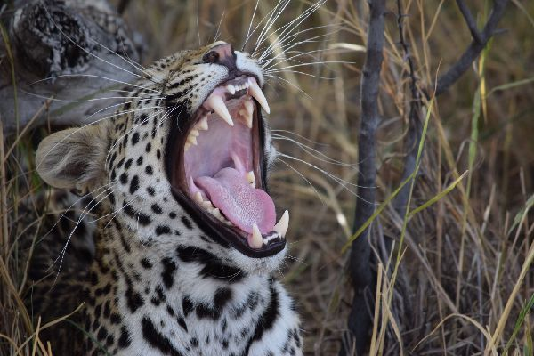

Anything out of the ordinary is detected
Anything that will startle your livestock will be sensed. Protect your animals from stray dogs, caracal, jackal, leopard, rustlers, raiders, vultures, fires and many more.
Adjustable for almost any livestock
Users have the option to adjust the settings to accommodate just about any livestock. These settings are predominantly related to how active they are at night.
Easy setup
There are no installation costs. Once you received your unit, all you have to do is attach it to an animal.
Works with any mobile device
The easy to use application can be installed on any Android or iOS device.

Tamper proof design
There are no field stations that thieves could damage and any tampering with the unit will set off an alarm on the farmers mobile device.